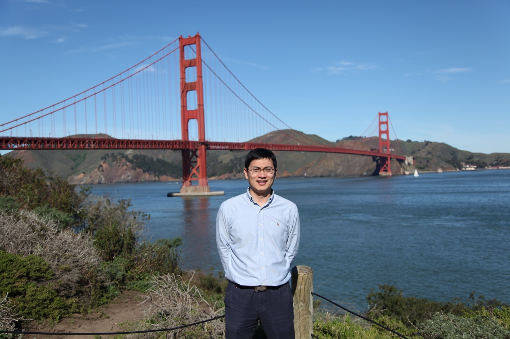

赵祥伟
赵祥伟，男，博士，教授。2006年博士毕业于浙江大学。曾先后任日本大阪大学激光工程研究所、美国密歇根大学生物医学工程系、伊利诺大学香槟厄本那分校电子与计算机工程系，哈佛大学医学院访问学者。现主要研究方向为生物医学检测与传感，研究内容有超构材料、等离激元光学、单细胞分析、表面增强拉曼光谱（SERS）、微流控芯片、POCT检测芯片与仪器等。主持或完成国家自然科学基金、863计划、江苏省科技支撑计划等10余项。发表SCI论文40余篇，已授权专利14项，转化专利2项。研究成果获得教育部自然科学一等奖以及日内瓦国际发明展特别金奖。入选教育部新世纪优秀人才、江苏省“六大人才高峰”高层次人才、江苏省青蓝工程优秀青年骨干教师和东南大学“华英学者”。
Email: xwzhao@seu.edu.cn; 欢迎有光学、电子、化学、生物医学等相关背景同学报考硕士、博士或者合作博士后研究。
代表性论文：
1)Liu B, Ni HB, Zhang D, Wang DL, Fu DG, Chen HY, Gu ZZ and Zhao XW*, Ultrasensitive detection ofprotein with large linear dynamic range based on core-shell SERS nanotags andphotonic crystal beads, ACS Sensor, 2017, 2 (7):1035–1043
2)Wang DL, Ni HB, Wang ZQ, Liu B, Chen HY, Gu ZZ and Zhao XW*. Discrimination of nosiheptide sources with plasmonicfilters, ACS Applied Materials & Interfaces, 2017, 9 (15), pp 13049–13055
3)Liu B, Zhao X W*, Jiang W, Fu D G*, and Gu ZZ*, Multiplex bioassays Encoded by photonic crystal beads and SERS nanotags,Nanoscale,2016, 8, 17465 – 17471 (Highlighted Backcover)
4)Wang D L, Zhao X W*, Liu X, Mu Z D, and Gu Z Z*, Rapid identification ofelectricigens via silver-plated photonic crystal filter,Nano Research 2016, 9(9):2760–2771 (Reported by EurekAlert! Science News, retrieved by virtual journal (http://biomedfrontiers.org/newtech-2016-10-16/))
5)MuZ D, Zhao X W*, Huang Y, Lu M, Gu ZZ*, Photonic Crystal HydrogelEnhanced Plasmonic Staining for Multiplexed Protein Analysis, Small.2015, 11(45): 6036-43（Cover）
6)Zhao X W*, Xue J Y, Mu Z D, Huang Y, Lu M* and Gu Z Z*, Gold nanoparticle incorporated inverse opal photonic crystalcapillaries for optofluidic surface enhanced Raman spectroscopy. BiosenBioelectron, 2015, 72: 268-274
授权专利：
1)赵祥伟，陶庆东，顾忠泽，一种微流控药物筛选芯片，专利号：ZL 201410299838.5
2)赵祥伟，杨子学，王晓霞，顾忠泽，陈宝安，一种基于光子编码微球的多元生物标志物检测盒式芯片，专利号：ZL 201310151250.0
3)赵祥伟，赵文举，赵远锦，扈靖，顾忠泽，一种基于微球生物检测的微流控芯片，专利号：ZL 200810019394.X
4)顾忠泽，赵祥伟，王晓霞，一种用于微球多元生物检测的微流控芯片，专利号：ZL 201310135485.0
5)顾忠泽，赵祥伟，刘兆斌，张宏，陆祖宏，一种基于微球的微流控生物芯片，专利号：ZL 200410041366.X
6)顾忠泽，赵祥伟，一种纳米金编码的聚合物微球及其制备方法，专利号：ZL 200510040518.9
7)顾忠泽，赵祥伟，光子晶体编码微球生物芯片检测装置，专利号：ZL 201120207209.7
8)顾忠泽，刘兆斌，赵祥伟，张宏，陆祖宏，利用光子微粒编码的微通道阵列式生物芯片及其应用方法，专利号：ZL 200410041365.5
9)顾忠泽，长井圭治，赵祥伟，杨菡，一种珠光颜料编码的聚合物微球及其制备方法，专利号：ZL 200510038438.X
10)张继中，顾忠泽，赵祥伟，陆祖宏，以胶体晶体为模版的蛋白质传感敏感膜的制备方法，专利号：ZL 200510040468.4
11)顾忠泽，李娟，赵祥伟，赵远锦，扈静, 一种光子晶体复合编码微球的制备方法, 专利号：ZL 200810019395.4
12)顾忠泽，扈靖，赵祥伟，赵远锦，以水凝胶为模板胶体晶体为墨水进行微接触图案印刷的方法，专利号：ZL 200710191072.9
13)顾忠泽，赵远锦，赵祥伟，扈靖，基于微流体的微球制备方法，专利号：ZL 200810019066.X
14)顾忠泽，唐宝成，赵远锦，赵祥伟，用于单分散乳液制备的重力驱动微流体装置，专利号：ZL 201020556180.9